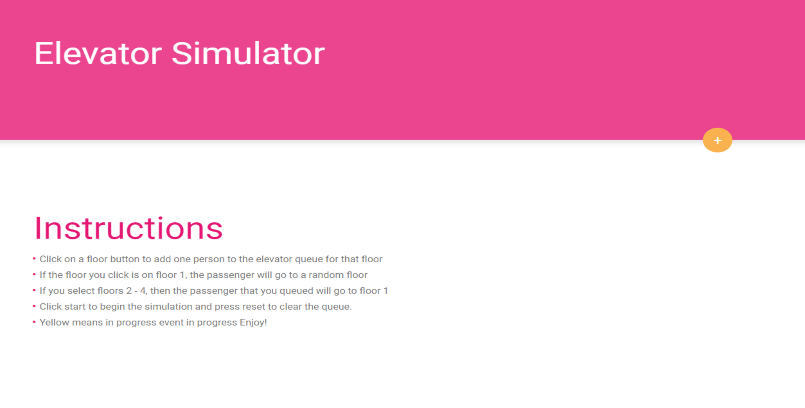
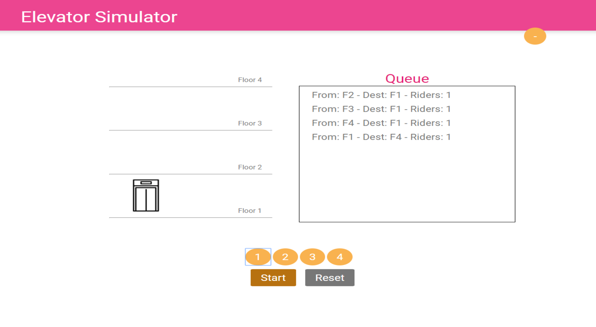

Web Application
A web application that simulates an elevator that is proccessing requests held in a queue which represents passengers on several floors of a building requesting the use of the elevator.
The project is built using the traditional suspects for a web page: HTML, CSS, JavaScript and JQuery. Users can add passnegers to a queue in any order they would like. After the queue is ready simply select "start" and watch the elevator process the events in the queue. The current event being processed turns yellow which I implemented to improve user experience.
The major challenge while building this project was getting the animation for each elevator movement to finish before processing the next event in the queue. I ended up using a sleep method and promises to pause in the middle of a recursive function that iterates through the queue. Before I came up with that solution, I had tried callbacks, generators, and event listeners, but found little to no success. Any way please check out the project through the link below.